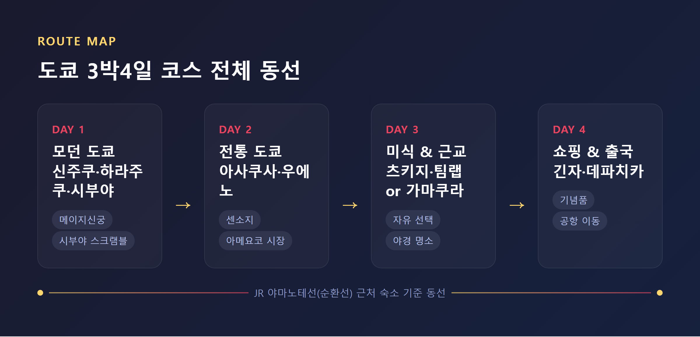
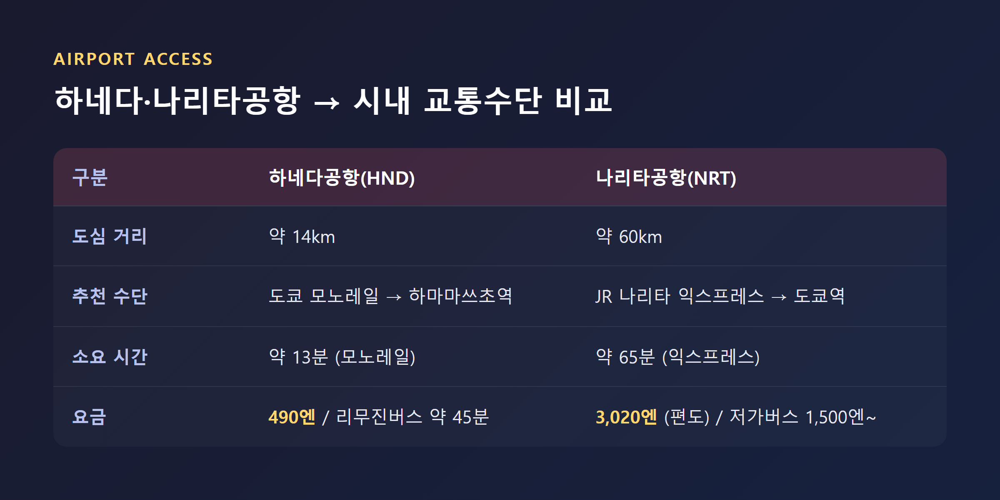
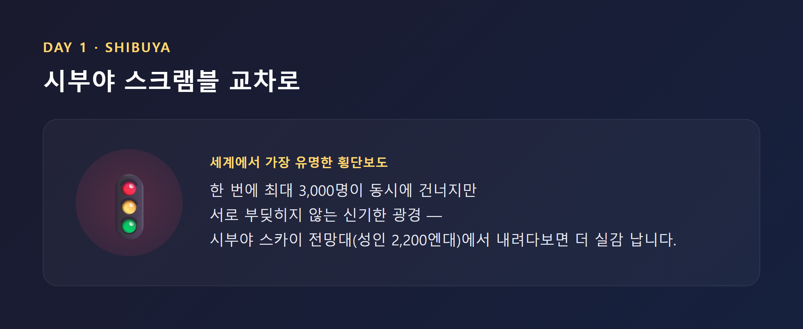
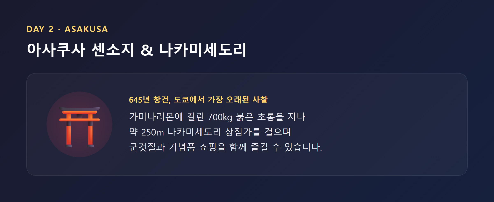
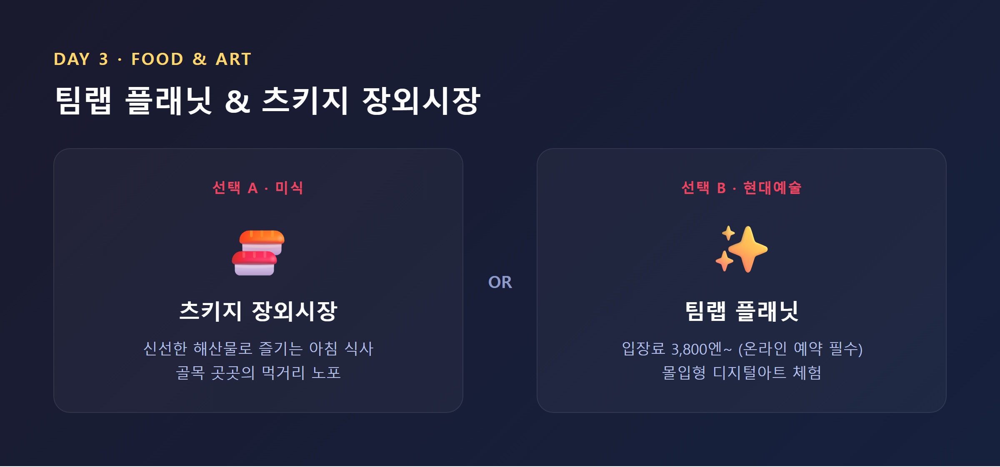
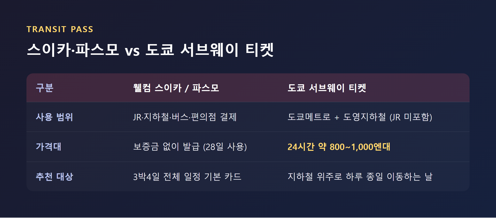
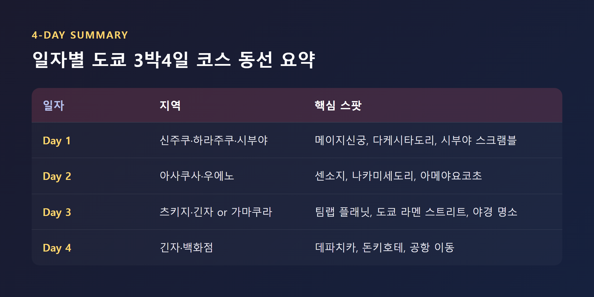

솔직히 말씀드리면, 저도 처음 도쿄 여행을 계획할 때는 어디서부터 손대야 할지 감이 안 잡혔습니다.
신주쿠, 시부야, 아사쿠사, 긴자... 지도를 펼쳐놓고 봐도 지역 이름만 나열될 뿐, "그래서 며칠째에 어디를 가야 동선이 안 꼬이는지"는 아무도 명쾌하게 알려주지 않더군요. 그런데 여러 자료를 뜯어보고 직접 코스를 짜보면서 알게 됐습니다 — 도쿄는 무작정 유명한 곳부터 찍는 게 아니라, "어느 노선 근처에 머무는가"부터 정하고 나면 나머지는 자연스럽게 풀린다는 것입니다.
이 글은 그렇게 정리한 도쿄 3박4일 코스입니다. 3줄로 먼저 요약하면 이렇습니다.
목차

먼저 말씀드리고 싶은 것이 있습니다. 도쿄는 다른 도시보다 "어느 동네에 머무를지"가 훨씬 중요합니다. 도시 자체가 넓고 층위가 많아서, 숙소 위치 하나로 하루 이동 시간이 크게 갈리기 때문인데요.
그래서 첫 방문자에게는 신주쿠가 가장 자주 추천됩니다. JR 야마노테선을 비롯해 여러 지하철 노선이 교차하고, 하네다공항 리무진버스와 나리타공항 나리타 익스프레스가 직결되기 때문입니다. 시부야도 접근성 1위로 꼽히는 지역인데, 도쿄 대부분 지역을 몇 정거장 안에 이동할 수 있어 첫 도쿄 여행자에게 인기가 많습니다.
조금 더 전통적인 분위기를 원한다면 아사쿠사, 차분하고 세련된 쪽을 원한다면 긴자·히비야 쪽도 선택지입니다. 참고로 신주쿠 기준 중급 호텔은 1박 9,000~14,000엔, 캡슐호텔은 5,500~7,500엔 정도인데요. 벚꽃철 같은 성수기에는 같은 호텔이 25,000엔까지 오르기도 한다는 점은 미리 감안해두시는 게 좋습니다.
도쿄 3박4일 코스에서 입국 당일은 욕심을 내지 않는 게 핵심입니다. 저는 이 원칙을 여러 번 확인했는데요, 장거리 비행 후 바로 관광을 밀어붙이면 다음 날 컨디션이 무너지는 경우가 많기 때문입니다.
하네다공항(HND)은 도심에서 약 14km로 가깝습니다. 도쿄 모노레일을 타면 하마마쓰초역까지 13분, 요금은 490엔이고 JR 야마노테선으로 바로 환승할 수 있습니다. 리무진버스를 타면 신주쿠·시부야·아사쿠사 주요 호텔까지 약 45분이면 도착합니다.
나리타공항(NRT)은 도심에서 약 60km 떨어져 있어 60~90분 정도 걸립니다. JR 나리타 익스프레스는 도쿄역까지 65분, 편도 3,020엔인데요. 외국인 대상 왕복 특가권은 자료마다 5,000엔대에서 5,200엔대로 약간씩 다르게 안내되고 있어서, "약 5,000엔대"로 알아두시고 예약 시점에 공식 사이트에서 한 번 더 확인하시길 권해 드립니다. 저가 공항버스는 주간 기준 성인 1,500엔인데, 심야·새벽 시간대는 최대 3,000엔까지 오를 수 있으니 늦은 항공편이라면 미리 계산해두는 게 낫습니다.
도착 첫날은 IC카드 발급, 숙소 체크인, 숙소 근처 가벼운 저녁 식사 정도로 마무리하시길 권해 드립니다.

도쿄 3박4일 코스의 첫날은 "현대적인 도쿄"를 보여주는 동선으로 짜는 것이 정석입니다.
오전에는 메이지신궁의 숲길을 걷고, 다케시타도리로 넘어가는 코스를 추천합니다. 다케시타도리는 화려하게 차려입은 10~20대로 늘 붐비는, 이른바 '가와이(귀여움)' 문화의 중심지인데요. 개성 있는 부티크와 빈티지숍, 코스프레숍이 밀집해 있어 걷는 것만으로도 구경거리가 됩니다.
오후에는 도쿄도청 전망대(무료)나 신주쿠교엔, 요요기공원 쪽으로 이동합니다. 늦은 오후가 되면 시부야 스크램블 교차로와 시부야 스카이 전망대(성인 2,200엔대)로 넘어가는데요. 세계에서 가장 유명한 횡단보도라는 수식어가 붙는 이유는, 직접 서보면 압니다. 사람이 이렇게 많은데도 부딪히지 않는다는 것이 신기하게 느껴지실 겁니다.
저녁은 오모이데요코초 골목의 이자카야나 시부야 인근 맛집을 추천합니다. 참고로 이자카야에 자리를 잡으면 '오토시(お通し)'라는 기본 안주가 자동으로 나오고 300~500엔 정도 자동 청구되는데, 이건 불친절이 아니라 일본 이자카야의 관습이니 당황하지 않으셔도 됩니다.

둘째 날은 크게 두 갈래로 나뉩니다. 한국어권 자료들은 이날을 디즈니랜드·후지산·해리포터 스튜디오 중 하나를 고르는 자유 선택일로 비우는 경우가 많고, 영어권 자료는 아사쿠사·우에노 중심의 전통 도쿄 코스를 넣는 경우가 많습니다. 저는 두 버전 모두 유효하다고 봅니다 — 결국 취향과 체력의 문제니까요.
전통 도쿄 코스를 고른다면, 오전은 센소지부터 시작합니다. 645년에 창건된, 도쿄에서 가장 오래된 사찰인데요. 가미나리몬(뇌문)에 걸린 700kg짜리 붉은 초롱을 지나 나카미세도리라는 약 250m 전통 상점가를 걸으며 군것질도 하고 기념품도 살 수 있습니다.
오후에는 우에노공원으로 이동합니다. 도쿄국립박물관 등 미술관·박물관이 모여 있는 클러스터인데, 바로 옆 아메야요코초 시장에는 400여 개 점포가 늘어서 있어 서민적인 분위기를 느끼기에 좋습니다. 저녁은 아키하바라의 전자상가·오타쿠 문화를 즐기거나, 반대로 긴자로 넘어가 고급 다이닝을 선택하는 것도 방법입니다.

셋째 날도 선택지가 갈립니다. 저라면 이렇게 나눠보겠습니다.
선택 A — 미식·현대 코스: 츠키지 장외시장에서 신선한 해산물로 아침을 먹고, 팀랩 플래닛(입장료 3,800엔~, 온라인 예약 필수)에서 디지털아트를 체험한 뒤, 긴자에서 쇼핑을 하고 도쿄타워나 오다이바로 마무리하는 동선입니다.
선택 B — 가마쿠라 당일치기: 전철로 약 1시간 거리인 가마쿠라로 나가 츠루가오카 하치만구, 고토쿠인의 대불, 에노덴 해안 트램을 즐기는 코스입니다.
어느 쪽이든 저녁은 전망 좋은 곳에서 마무리하시길 권해 드립니다. 도쿄타워, 오다이바 레인보우브릿지, 도쿄스카이트리 같은 곳들이 후보입니다. 여기서 한 가지 팁을 드리자면, 라멘을 아직 안 드셨다면 도쿄역의 '도쿄 라멘 스트리트'를 들러보시길 권합니다. 유명 라멘집 8곳이 한자리에 모여 있어 골라 먹는 재미가 있습니다.

마지막 날은 욕심을 버리는 날입니다. 오전에는 긴자나 백화점 지하 식품관(데파치카)에서 기념품과 디저트를 사는 정도로 가볍게 채워보시길 권해 드립니다. 데파치카는 마감 1시간 전에 방문하면 고급 디저트나 반찬에 할인 스티커가 붙는다는 점, 알아두면 꽤 쏠쏠합니다.
돈키호테나 로프트에서 잡화 쇼핑을 추가하거나, 놓친 명소가 있다면 시부야·신주쿠 쪽으로 짧게 다녀오는 것도 좋습니다. 다만 공항까지 이동 시간을 넉넉히 잡아야 하는데요. 출국 2~3시간 전에는 공항에 도착하는 일정으로 짜시길 권해 드립니다.
도쿄 여행에서 의외로 고민이 많이 되는 부분이 교통패스입니다. 결론부터 말씀드리면 — 짧은 3박4일 일정이라면 스이카(Suica)나 파스모(Pasmo) 같은 IC카드 하나로 대부분 해결됩니다. JR, 지하철, 버스는 물론 편의점 결제까지 되기 때문인데요. 외국인 관광객이라면 보증금 없이 발급받는 웰컴 스이카(28일간 사용 가능, 모바일 버전도 있음)가 특히 편리합니다.
지하철 위주로 하루 종일 움직이는 날에만 도쿄 서브웨이 티켓(도쿄메트로+도영지하철 전용, JR 미포함)을 추가로 사는 방식을 추천 드립니다. 다만 이 가격은 자료마다 차이가 있어서 정직하게 말씀드리면 — 공식 안내(JNTO)는 24시간권 800엔, 48시간권 1,200엔, 72시간권 1,500엔으로 나오는데, 일부 여행 블로그는 24시간권 1,000엔, 72시간권 2,000엔으로 다르게 안내합니다. 그래서 이 글에서는 "24시간 기준 약 800~1,000엔대"라는 범위로 안내드리고, 실제 구매 전에는 공식 사이트에서 재확인하시길 권해 드립니다.

예산도 자료에 따라 폭이 있는데요. 한국어권 자료(트립스토어 기준)는 항공권·숙박을 제외하고 하루 약 13만원(식사+교통패스+입장료 포함) 정도로 추정합니다. 영어권 자료를 종합하면 1인 1일 기준으로 저예산은 약 12,000엔, 중급은 18,000~22,000엔, 럭셔리는 40,000엔 이상으로 갈립니다.
숙박비는 계절 변동이 꽤 큽니다. 비수기(1월 중순, 2월 초, 6월 중순 등)에는 중급 호텔이 1박 10,000엔대이지만, 벚꽃 시즌 성수기에는 25,000엔까지 뛸 수 있습니다. 성수기를 2~3주만 피해도 최대 40%까지 절약할 수 있다는 분석도 있으니, 일정에 여유가 있다면 시기 조정을 한번 고려해보시길 권해 드립니다.
몇 가지는 미리 알아두면 도쿄 여행이 훨씬 편해집니다.
환전: 도심은 카드 결제가 잘 되지만, 작은 식당이나 일부 자판기는 여전히 현금만 받습니다. 20,000~30,000엔 정도는 현금으로 들고 다니시길 권해 드립니다. 결제 단말기에서 통화를 고르라고 하면 반드시 '엔화(YEN)'를 선택하세요 — 자국 통화(DCC)로 결제하면 수수료가 더 붙습니다.
통신: 짧은 일정이라면 eSIM이 가장 간편합니다. 출국 전 QR코드로 미리 구매·설치해두면 도착하자마자 활성화할 수 있습니다.
에티켓: 팁 문화가 없으니 어디서도 팁을 주실 필요가 없습니다. 오히려 실례가 될 수 있습니다. 길거리 음식은 서서 먹지 않고 앉아서 먹는 게 일반적이고, 전철·버스 안에서는 통화를 자제하는 등 정숙을 지키는 게 엄격하게 지켜지는 규칙입니다. 사찰이나 전통 음식점은 신발을 벗어야 하는 곳도 있으니 참고하세요.

정직하게 말씀드리자면, 이 코스에는 확정적으로 말씀드리기 어려운 부분이 있습니다.
첫째, 나리타 익스프레스 왕복권 가격이나 도쿄 서브웨이 티켓 가격처럼 출처마다 수치가 갈리는 정보가 있습니다. 이 글에서는 범위로 안내드렸지만, 실제 예약 시점에는 공식 사이트를 한 번 더 확인하시는 게 안전합니다.
둘째, 3박4일 코스 순서 자체도 정답이 하나는 아닙니다. 한국어권 자료는 "신주쿠 → 자유선택(디즈니·후지산) → 아사쿠사 → 긴자" 순서를 선호하고, 영어권 자료는 "현대(시부야·하라주쿠) → 전통(아사쿠사·우에노) → 미식/근교 → 쇼핑&출국" 순서를 선호합니다. 이 글은 후자를 기본 뼈대로 삼았지만, 숙소 위치나 공항 방향에 따라 순서를 바꾸는 게 더 효율적일 수도 있습니다.
셋째, 숙박비와 예산은 계절과 환율에 따라 체감이 크게 달라집니다. 성수기냐 비수기냐에 따라 같은 코스도 비용 차이가 상당하다는 점, 미리 감안해두시길 바랍니다.
도쿄 3박4일 코스에서 가장 중요한 건 결국 명소 개수가 아니라, 숙소 위치와 동선이라는 것입니다.
처음 가는 도쿄 여행을 계획 중이시라면, 이 글의 순서를 그대로 따르셔도 좋고, 본인의 숙소와 취향에 맞게 하루씩 바꿔보셔도 좋습니다. 다음 도쿄 여행에서는 어떤 동네를 가장 오래 걷고 싶으신가요?